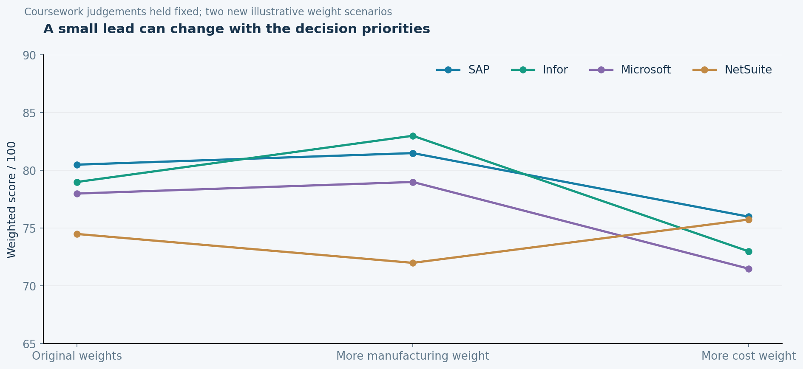

Enterprise systems coursework · FIT3138 · 2026
Enterprise Systems · SAP & ERP
Understand how business processes, system transactions and investment choices fit together.
- My role / scope
- Individual SAP practical and SSB process memo; Team Lead for the TGB ERP business case, including requirements context and option consolidation.
- Evidence to inspect
- Process explanation, weighted-score sensitivity and contribution boundaries.
- Context
- Separate teaching exercises and academic business cases; not a production SAP implementation.

SAP: follow the transaction chain
In the SAP teaching environment, I entered planned demand, reviewed MRP supply proposals, converted a planned order, processed the production cycle and reviewed cost and settlement evidence. The key distinction was demand versus supply: planned independent requirements express demand; planned orders propose supply.
The practical connects production planning, stock movements and order costing. It demonstrates teaching-system practice rather than certification or production implementation experience.
ERP selection: challenge a narrow lead
The team’s original weighted scores placed SAP at 80.5 and Infor at 79.0. In a later portfolio sensitivity check, increasing the manufacturing weight changed the preference to Infor. These are student-assigned case scores, not current vendor benchmarks.


Business judgement matters
The submitted financial assumptions produced a negative five-year NPV of approximately A$5.52 million at a 10% discount rate, with continuing annual costs above the assumed savings. The team recommended withholding immediate approval until economics and scope were validated.
The financial estimates were a teammate’s contribution. My documented work covered leadership, business background and objectives, requirements/process success factors, Infor evaluation and consolidating the comparison and recommendation.
Continue the conversation
Want to discuss the decisions?
I can walk through the evidence and explain the boundaries of my contribution.